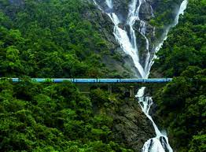

Baga Beach

Baga Beach is one of the most popular beaches in Goa, known for its vibrant atmosphere, water sports, and beach parties.
Old Goa

Old Goa is a UNESCO World Heritage Site famous for its well-preserved 16th-century churches and convents, reflecting the region's colonial history.
Anjuna Flea Market

The Anjuna Flea Market is a bustling marketplace where you can find everything from clothing and accessories to handicrafts and souvenirs, along with live music and delicious food.
Dudhsagar Falls
Dudhsagar Falls is a majestic waterfall located in the Western Ghats, surrounded by lush greenery and offering breathtaking views, especially during the monsoon season.
Fort Aguada

Fort Aguada is a well-preserved 17th-century Portuguese fort overlooking the Arabian Sea, offering panoramic views and a glimpse into Goa's colonial past.